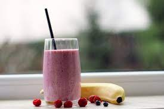

SUMMER IN A SMOOTHIE

DESCRIPTION
With Bananas,Raspberry,Pomegranate and Oranges,this
smoothie captures the best flavors of summer in one delicious cup.
INGREDIENTS
- 1 large ripe Banana
- 1.5 cups of unsweetened rasphberry thawed.
- Half cup Pomegranate juice.
- 3/4 cup Orange juice.
- 3/4 cup Almond breeze unsweetened original Almond milk.
DIRECTIONS
- Add all ingredients to a blender and blend until creamy and smooth,scraping down
sides as needed.
- Taste and adjust flavour as needed.Add more unsweetened original Almond Breeze
or fruit juice if too thick.If not sweet enough, add more banana